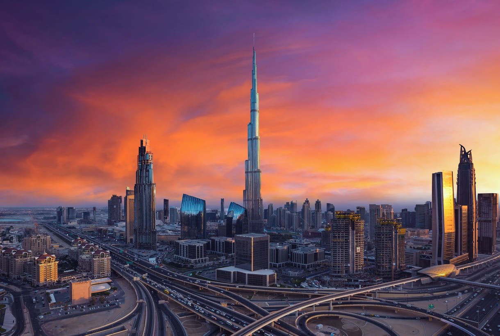
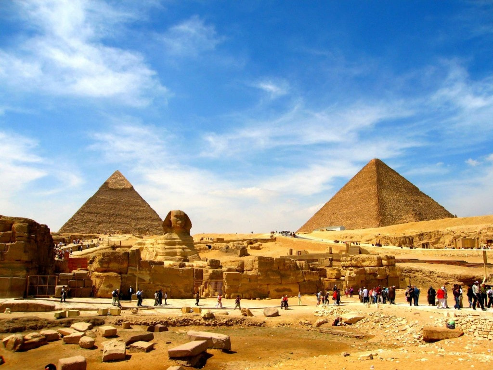
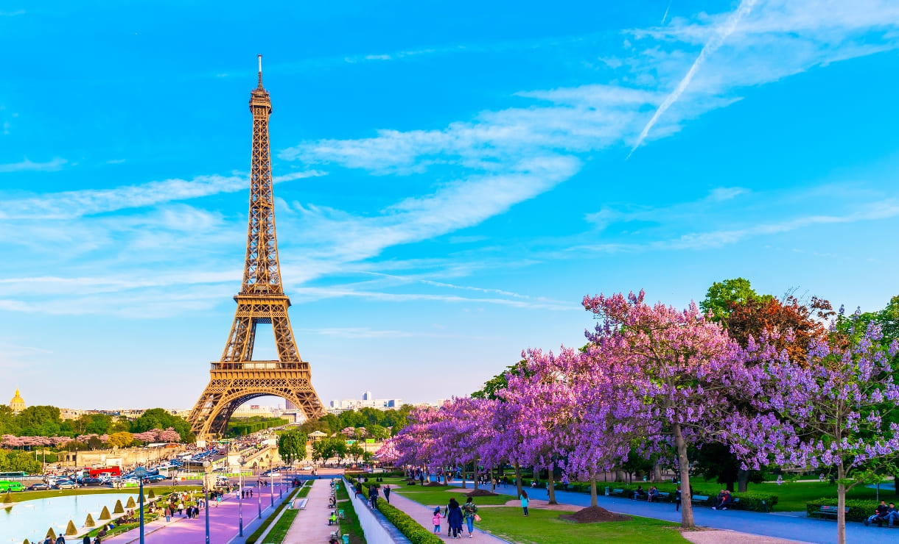
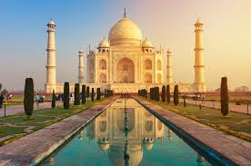
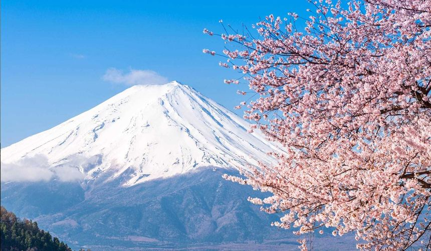

Исследуй страны вместе с Track & Travel
Выбери одно из популярных направлений

ОАЭ
Страна объединяет семь эмиратов. Самый большой из них — Абу-Даби,
самый маленький — Аджман, самый популярный у путешественников —
Дубай. В последнем можно подняться на самую высокую в мире смотровую
площадку небоскрёба Бурдж-Халифа на высоте 828 метров, заглянуть в
старинную крепость, устроить тур по колоритным восточным базарам,
погулять по искусственному острову Палм-Джумейра с роскошными
виллами.

Турция
Турция привлекает туристов со всего мира не только теплыми морями,
великолепными пляжами и жарким солнцем, но и большим количеством
архитектурных памятников. Курортная инфраструктура этой страны
отлично развита, и отдых здесь отличается разнообразием. Стамбул
поражает руинами античных городов, византийскими храмами и мечетями
Османской империи; Анталия славится активной ночной жизнью,
ресторанами и клубами; горячие источники Яловы и соляные террасы
Памуккале укрепляют здоровье, а заповедная природа Каппадокии
утешает и успокаивает.

Египет
Египет щедро одарён природой и историей. Эта страна обладает одним
из семи чудес света — великими пирамидами, ей принадлежит
таинственный Сфинкс, на её территории множество храмов, оставленных
одной из величайших цивилизаций древности. Есть у Египта и великий
Нил, и кусок Сахары, и затерянные в пустыне оазисы, и античная
Александрия, и библейские святыни на Синайском полуострове, и
по-восточному пёстрый Каир. А главное, бесчисленные
достопримечательности страны фараонов можно изучать, совмещая с
пляжным отдыхом в популярном формате «всё включено».

Франция
Самая посещаемая страна в мире на протяжении многих лет. Для
идеального отдыха в ней есть всё: богатое культурное наследие и
исторические достопримечательности, изысканная кухня, пляжи
на юге и разнообразная природа — от лазурных бухт Средиземного моря
и суровых скал Атлантики до живописных долин и виноградников.
Путешествие по Франции чаще всего начинается со столицы. В этом
городе есть сотни достопримечательностей, которые не
нуждаются в представлении: Монмартр, базилика Сакре-Кёр, Эйфелева
башня, Елисейские поля и Триумфальная арка. Второй по величине город
страны — Марсель, столица лавандового края Прованса. Сюда приезжают,
чтобы наслаждаться архитектурой, гулять по мощёным улицам Старого
порта и любоваться замком Иф. История мести Эдмона Дантеса, ставшего
графом Монте-Кристо, знакома большинству путешественников с детства.

Индия
Индия — одно из самых удивительных государств Южной Азии. Колыбель
древнейшей цивилизации, родина буддизма и индуизма сегодня она
занимает второе место на планете по численности населения и
продолжает влюблять в себя путешественников, жаждущих невероятных
открытий. Индия загадочна, не похожа ни на один другой край на
земле. Фейерверк красок и ароматов, калейдоскоп традиций, порой
шокирующих, но остающихся неприкасаемыми испокон веков.
Величественные дворцы, древние храмы и иные парадные
достопримечательности соседствуют с покосившимися лачугами и шумными
базарами — богатства тут нет, зато есть жизнь. А фоном всему —
великолепные пейзажи: горные вершины, джунгли, пляжи — местная
природа щедра на красоты. Сюда едут за просветлением: в отрыве от
западной суеты начинаешь смотреть на мир другими глазами. А еще
здесь загорают под ласковым солнцем, покоряют строптивые волны,
веселятся на модных курортах, постигают истинные смыслы йоги. Индия
со всеми своими традициями и историей в 5000 лет прекрасно вписалась
в современную реальность.

Япония
Япония – это удивительная страна, полная контрастов, противоречий.
Здесь жизнь течет стремительно и вместе с тем сильно влияние
традиций, природа дарит умиротворение, спокойствие. Сюда чаще едут
уже опытные путешественники, посетившие до того не одну страну.
Бюджетный отдых и Страна восходящего солнца – это несовместимые
понятия. Здесь отсутствует понятие «низкий сезон», цены всегда
высокие, но все, кто побывал в этой стране, однозначно говорят, что
поехать сюда стоит. Достопримечательности Японии удивят
даже искушённого туриста. Здесь есть на что посмотреть и в первый
приезд, и в следующие визиты, потому что охватить всё практически
невозможно.